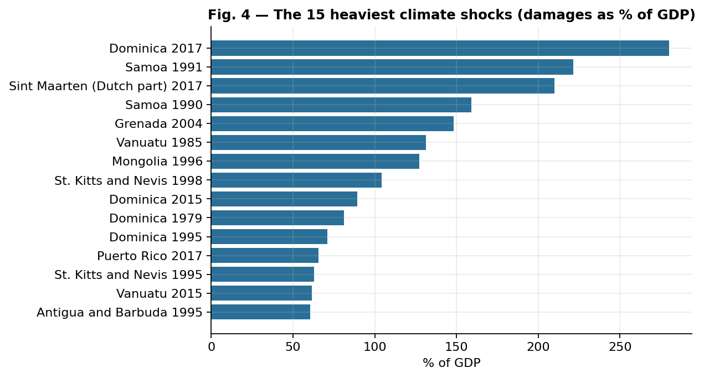
Climate disasters are becoming more frequent and more costly. For a small island state, a single cyclone can destroy more than the country's annual output. But the effect on growth is not obvious: destroying capital lowers output, while reconstruction can then stimulate it.
Question. Do the climate disasters that hit a country in a given year reduce its economic growth, and by how much? Does the effect persist into the following year?
Learning task. Supervised regression. The target $y_{it}$ is the annual real GDP growth (%) of country $i$ in year $t$. The explanatory variables are exposure to disasters ($t$ and $t-1$) and macroeconomic controls.
Success criteria (set before running the experiments): (i) beat naive baselines (mean, persistence) on a test period later than the training period; (ii) ablation: the "controls + disasters" model must have a lower out-of-sample error than the "controls only" model, which directly tests the question; (iii) stable effects, measured with bootstrap confidence intervals; (iv) from-scratch implementations that reproduce scikit-learn.
| Dataset | Source / Kaggle URL | Content |
|---|---|---|
| Natural disasters 1970–2021 | EM-DAT (CRED, UCLouvain)kaggle.com/datasets/brsdincer/all-natural-disasters-19002021-eosdis | 14,644 events: country, year, type, deaths, people affected, damages (thousand USD) |
| World GDP | World Bank (WDI)kaggle.com/datasets/zgrcemta/world-gdpgdp-gdp-per-capita-and-annual-growths | Current GDP, GDP per capita, real GDP growth, 1960–2020 |
We keep climate disasters in the EM-DAT sense: hydrological (floods, landslides), meteorological (storms) and climatological (droughts, extreme temperatures, wildfires). Geophysical disasters (earthquakes, volcanoes) serve as a comparison group, since they do not depend on the climate. Epidemics and insect infestations are excluded.

src/data_prep.py)Disasters are aggregated by (country, year), then merged with the World Bank data. A country-year with no recorded disaster gets 0. To compare countries of very different sizes, every intensity is scaled by the size of the economy, then transformed with $\log(1+x)$ because the distributions are highly skewed (fig. 3).
| Variable | Definition |
|---|---|
log_dmg_climate_pct | $\log(1+\text{climate damages as \% of GDP})$, year $t$ |
log_dmg_climate_pct_lag1 | same, year $t-1$ (delayed effect / reconstruction) |
log_deaths_climate_pm | $\log(1+\text{deaths per million inhabitants})$ |
log_affected_climate_pct | $\log(1+\text{people affected as \% of population})$ |
n_hydro, n_meteo, n_climato | number of events per group |
log_dmg_geo_pct | geophysical damages as % of GDP (comparison) |
growth_lag1 | previous year's growth (persistence) |
log_gdppc_lag1 | log GDP per capita in $t-1$ (level of development) |
world_growth | world growth in $t$ (global cycle) |
Only 30–40 % of disasters have a reported damage amount (fig. 4). A missing amount is counted as 0. This strong assumption underestimates shocks, especially in poor countries. We partly offset it with variables that are always reported: deaths, people affected and number of events. The rise in recorded events since 1970 (fig. 1) partly reflects better recording, not only more disasters.

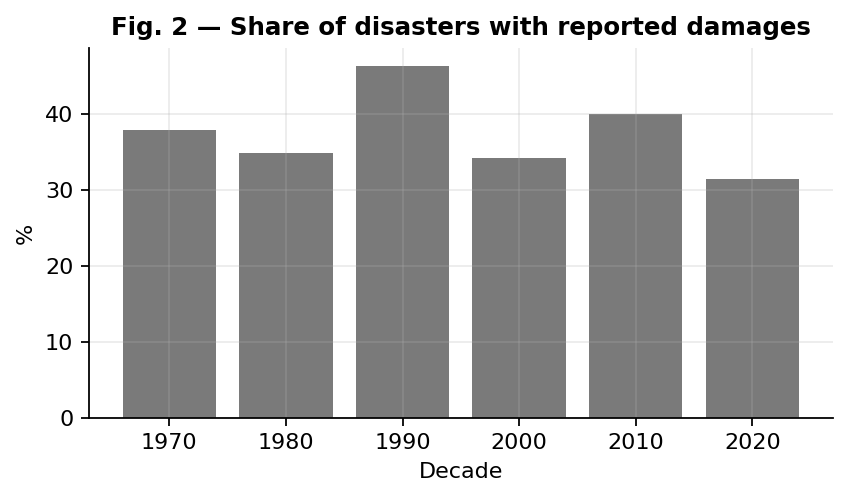


The event study (fig. 6) gives the best descriptive intuition. Before the shock, growth is close to its mean. In the shock year, it falls by about 1.1 points (95 % CI excluding 0). The following year, it goes back slightly above normal. This profile justifies including damages in both $t$ and $t-1$. Raw correlations remain weak (|ρ| < 0.1): growth depends first on its own persistence and on the global cycle.
The split is chronological: train 1971–2005 (5,174 obs.), validation 2006–2012 (1,359), test 2013–2019 (1,371, used only once). The year 2020 (189 obs., COVID) is a separate stress test. A random split would put future years in the training set and overstate performance, because growth series are autocorrelated. The winsorization bounds of the target (1st/99th percentiles: [−13.5, 21.3] %, which neutralise wars and oil booms) and the standardization parameters are estimated on the training set only. The lags check that year $t-1$ really exists.
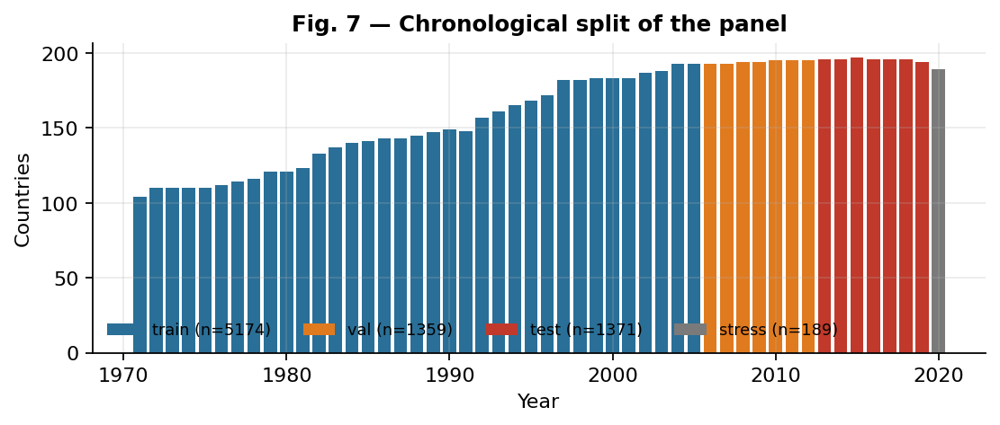
src/scratch_linear.py)Model. $\hat y_i=\mathbf{w}^\top\mathbf{x}_i+b$, with standardized $\mathbf{x}_i\in\mathbb{R}^{11}$. Objective (MSE + L2 penalty, bias not penalized):
$$J(\mathbf{w},b)=\frac{1}{2n}\sum_{i=1}^{n}\left(\mathbf{w}^\top\mathbf{x}_i+b-y_i\right)^2+\frac{\alpha}{2}\lVert\mathbf{w}\rVert^2 .$$Gradient. With $\mathbf{r}=X\mathbf{w}+b\mathbf{1}-\mathbf{y}$: $\nabla_{\mathbf{w}}J=\tfrac1n X^\top\mathbf{r}+\alpha\mathbf{w}$, $\ \partial_b J=\tfrac1n\mathbf{1}^\top\mathbf{r}$.
Optimization. Three procedures, all hand-coded:
np.linalg.solve.Uncertainty. Observations from the same country are correlated over time. We therefore use a country-level bootstrap, implemented from scratch: 500 draws of whole countries with replacement, refitting the model, then the 2.5 / 97.5 % percentiles.
Why this model? The question is about the influence of disasters. A linear model gives interpretable coefficients (growth points per unit of shock) together with confidence intervals.
src/scratch_tree.py)Model. The tree partitions the space into regions $R_m$ and predicts the local mean: $\hat f(\mathbf x)=\sum_m c_m\mathbb 1\{\mathbf x\in R_m\}$, with $c_m=\bar y_{R_m}$. Impurity: $\mathrm{SSE}(R)=\sum_{i\in R}y_i^2-(\sum_{i\in R}y_i)^2/|R|$. Greedy recursive construction: at each node, we choose the split $(j,s)$ that maximizes
$$\Delta(j,s)=\mathrm{SSE}(R)-\mathrm{SSE}(R_{x_j\le s})-\mathrm{SSE}(R_{x_j>s}).$$After sorting by $x_j$, the cumulative sums of $y$ and $y^2$ evaluate every split in $O(n)$, i.e.
$O(p\,n\log n)$ per level. The threshold is the midpoint between two consecutive distinct values. Stopping:
max_depth, min_samples_leaf, or no improving split. The importance of a variable is
the sum of the gains $\Delta$ it provides, normalized.
Why a tree? The effect of a shock may be non-linear: zero below a threshold, sharp above it, and dependent on the level of development. A tree captures thresholds and interactions without specifying them in advance.

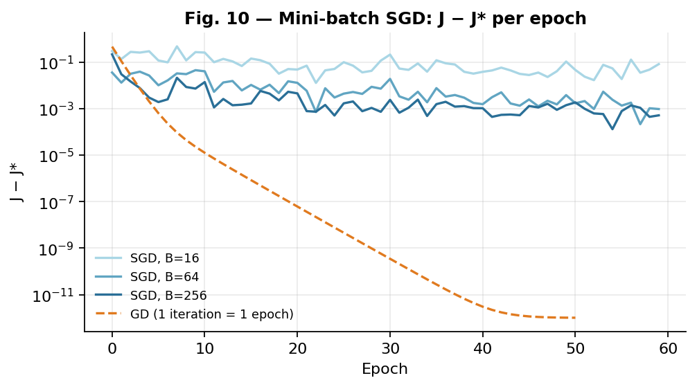
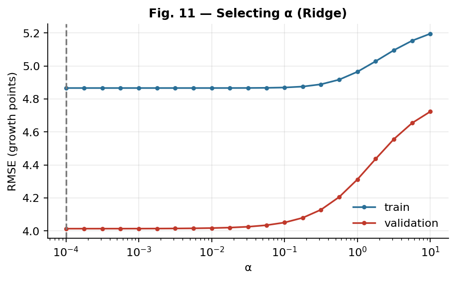
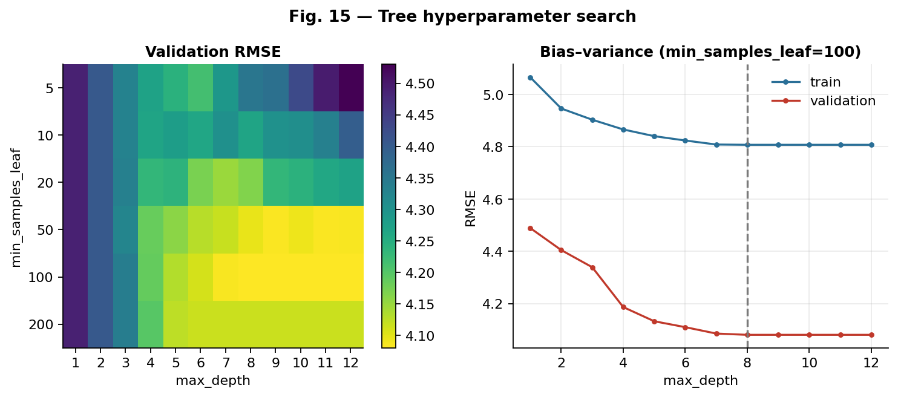
With $n=5{,}174$ observations for 11 weakly collinear variables, regularization is not needed ($\alpha^*=0$). The
selected tree has max_depth = 8 and min_samples_leaf = 100, i.e. 40 leaves.
| Method | Implementation | fit (ms) | RMSE val | MAE test | RMSE test | R² test | max |Δŷ test| |
|---|---|---|---|---|---|---|---|
| OLS | from scratch | 0.3 | 4.014 | 1.973 | 3.130 | 0.244 | ≈ 0 (10−14) |
| scikit-learn | 2.6 | 4.014 | 1.973 | 3.130 | 0.244 | ||
| Ridge (GD) | from scratch | 6.4 | 4.014 | 1.973 | 3.130 | 0.244 | ≈ 0 (10−6) |
| scikit-learn | 1.4 | 4.014 | 1.973 | 3.130 | 0.244 | ||
| SGD | from scratch | 163 | 4.017 | 1.972 | 3.130 | 0.245 | 0.90 |
| scikit-learn | 11.7 | 4.009 | 1.974 | 3.137 | 0.241 | ||
| CART tree | from scratch | 62 | 4.080 | 2.138 | 3.314 | 0.153 | 0 (identical trees, 40 leaves) |
| scikit-learn | 17 | 4.080 | 2.138 | 3.314 | 0.153 |
The from-scratch implementations produce exactly the same models as scikit-learn: identical coefficients for OLS/Ridge, and an identical tree (same splits, same importances, same 40 leaves). SGD differs slightly, as expected: the step schedules and sampling order are not the same, but the metrics are equivalent. In terms of cost, our tree is ~4× slower (a Python loop over variables and nodes, one-observation-at-a-time prediction) versus Cython for scikit-learn. Both scale as $O(n\log n)$ (fig. 13). Our SGD is slow because the mini-batch loop is written in Python.
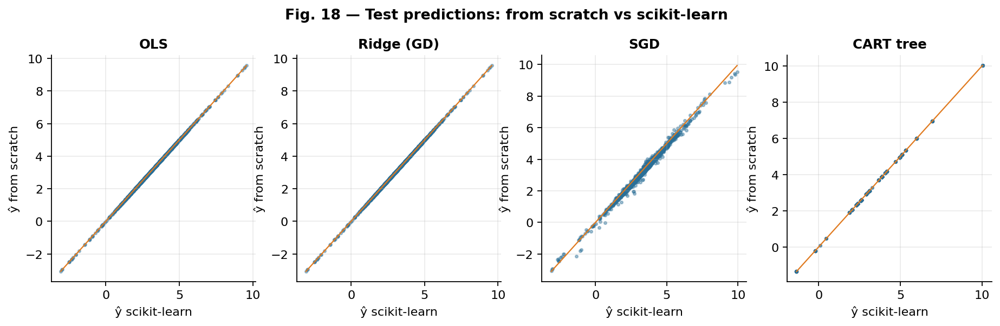
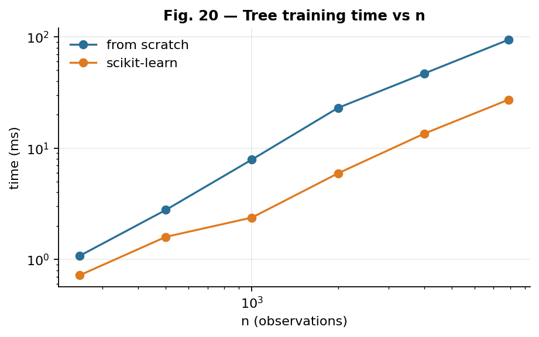

| Model | MAE test | RMSE test | R² test | RMSE 2020 |
|---|---|---|---|---|
| Training mean | 2.53 | 3.67 | −0.04 | 9.66 |
| Persistence ($\hat y_t=y_{t-1}$) | 2.18 | 3.77 | −0.10 | 8.82 |
| Linear (from scratch) | 1.97 | 3.13 | 0.244 | 6.65 |
| CART tree (from scratch) | 2.14 | 3.31 | 0.153 | 7.93 |
| Random forest (sklearn, reference) | 2.06 | 3.21 | 0.206 | — |
The linear model beats every baseline, including the random forest. It explains about a quarter of the variance in growth: a country's growth depends mostly on factors missing from our model (economic policy, conflicts, commodity prices). In 2020, all models fail ($R^2<0$). The COVID shock goes far beyond anything seen during training, and world growth of −3 % is not enough to describe it. This is a typical case of distribution shift.
| Sample | Model | RMSE (all) | R² (all) | RMSE (countries hit*) |
|---|---|---|---|---|
| Validation | controls only | 4.052 | 0.298 | 3.191 |
| + disasters | 4.014 | 0.311 | 2.999 (−6.0 %) | |
| Test | controls only | 3.157 | 0.232 | 3.080 |
| + disasters | 3.130 | 0.244 | 2.807 (−8.9 %) |
* country-years with climate damages > 0.1 % of GDP (145 in validation, 152 in test).
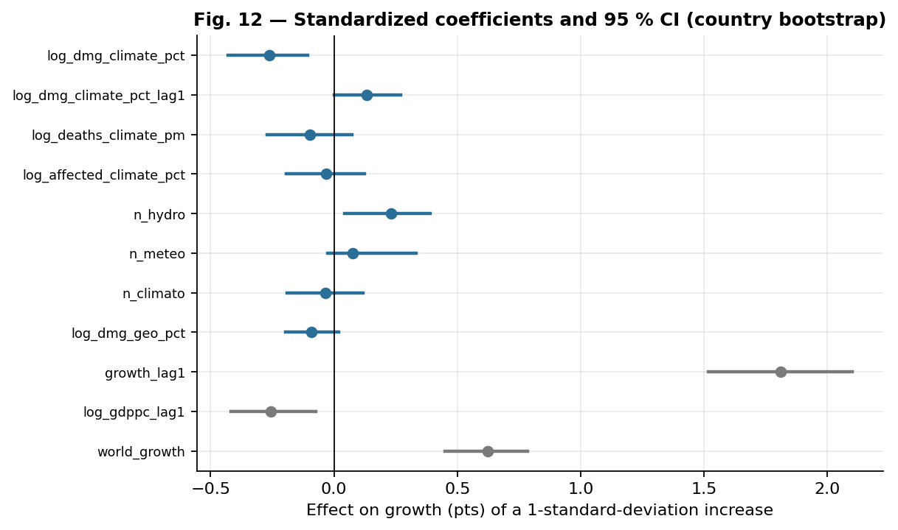
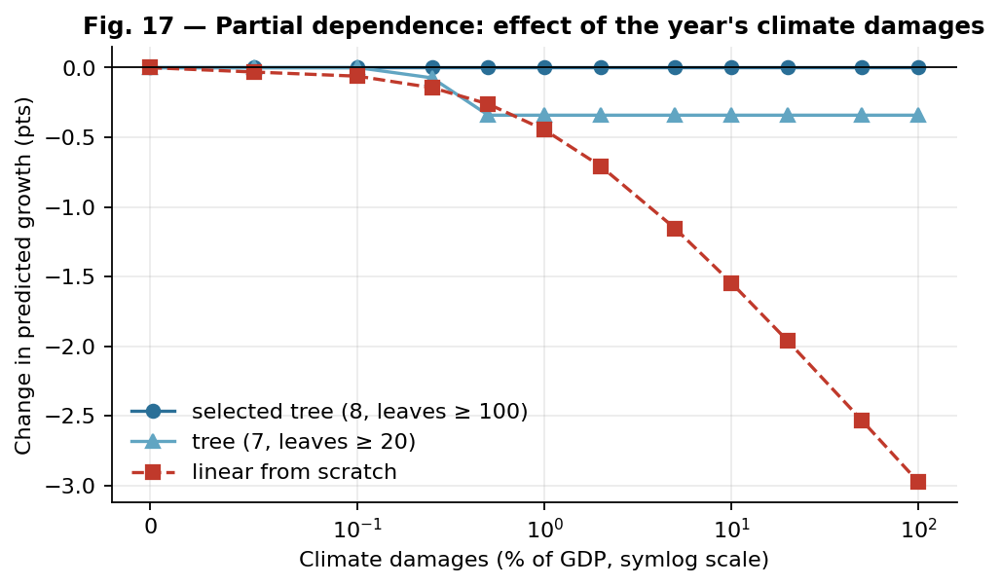
| Damages (% GDP) | Effect year $t$ (pts) | 95 % CI | Effect $t+1$ (pts) | Cumulative effect (pts) | 95 % CI cumulative |
|---|---|---|---|---|---|
| 1 % | −0.45 | [−0.73, −0.18] | +0.22 | −0.23 | [−0.52, 0.06] |
| 5 % | −1.15 | [−1.88, −0.47] | +0.57 | −0.59 | [−1.35, 0.16] |
| 10 % | −1.55 | [−2.52, −0.63] | +0.76 | −0.79 | [−1.80, 0.22] |
| 50 % | −2.53 | [−4.13, −1.03] | +1.24 | −1.29 | [−2.95, 0.35] |
The shock-year effect is negative and significant. The lagged coefficient is positive (95 % CI [0.00, 0.65]): this is the reconstruction effect. It offsets about half of the initial loss. The two-year cumulative effect remains negative, but its interval includes 0. These orders of magnitude are in line with the empirical literature on the topic (Noy, 2009; Felbermayr & Gröschl, 2014). Other results:
The tree selected on validation hardly uses the disasters at all. They account for 0.5 % of the importance,
against 61 % for growth_lag1, and its partial dependence is flat (fig. 16). This is not a bug, since the
tree is identical to scikit-learn's, but a structural limitation: only 3.7 % of country-years suffer a shock
larger than 1 % of GDP. A leaf of at least 100 observations cannot isolate these cases, and the greedy criterion
prefers splits on persistence, which reduce the SSE much more. A less constrained tree (leaves ≥ 20) does use the
disasters (7 % of the importance) and finds a step-shaped negative effect, of about −0.35 pt beyond 0.5 % of GDP.
But its variance is higher, and so is its validation RMSE (4.15 vs 4.08). The linear model, for its part, pools all
the information into a single coefficient: it is statistically more efficient at detecting a moderate average effect
carried by a rare variable. The tree also approximates the near-linear persistence → growth relationship with a step
function (8 levels), which costs accuracy.
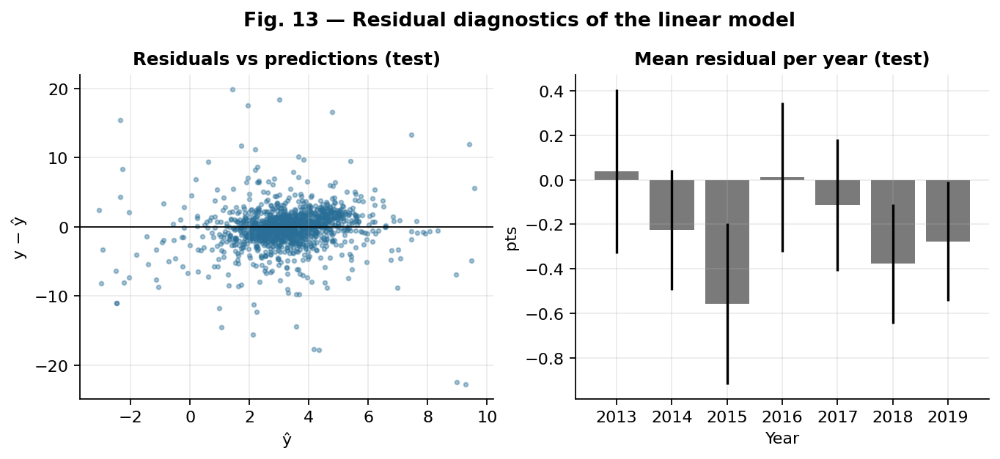
We implemented a linear/Ridge regression (three solvers) and a CART tree from scratch. They reproduce scikit-learn to machine precision. Applied to 50 years of data on 201 countries, they answer the question: climate disasters significantly reduce growth in the shock year, by about 0.45 pt for damages of 1 % of GDP and 1.5 pt for 10 %. A partial rebound follows the next year. They improve out-of-sample prediction, especially for the countries hit (−9 % RMSE). Their weight nonetheless remains small compared with the other drivers of growth. The linear model, simple and interpretable, is preferable to the tree here: the relevant information is carried by rare events, which a tree struggles to isolate.
[1] EM-DAT, CRED / UCLouvain, The International Disaster Database, www.emdat.be — via Kaggle: brsdincer/all-natural-disasters-19002021-eosdis.
[2] World Bank, World Development Indicators — via Kaggle: zgrcemta/world-gdpgdp-gdp-per-capita-and-annual-growths.
[3] Breiman, L., Friedman, J., Olshen, R., Stone, C. (1984). Classification and Regression Trees. Wadsworth.
[4] Hastie, T., Tibshirani, R., Friedman, J. (2009). The Elements of Statistical Learning, 2nd ed., ch. 3 and 9. Springer.
[5] Boyd, S., Vandenberghe, L. (2004). Convex Optimization, ch. 9 (gradient descent). Cambridge University Press.
[6] Noy, I. (2009). The macroeconomic consequences of disasters. Journal of Development Economics, 88(2), 221–231.
[7] Felbermayr, G., Gröschl, J. (2014). Naturally negative: The growth effects of natural disasters. Journal of Development Economics, 111, 92–106.
[8] Cameron, A. C., Gelbach, J., Miller, D. (2008). Bootstrap-based improvements for inference with clustered errors. Review of Economics and Statistics, 90(3).
[9] Pedregosa, F. et al. (2011). Scikit-learn: Machine Learning in Python. JMLR, 12, 2825–2830 (used only for the benchmark and the metrics).